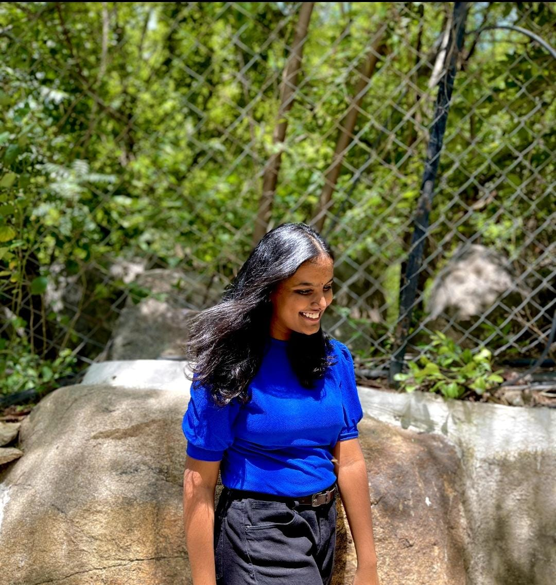

A diligent individual who is ready to utilise skills and passion to further the mission of the company.Bringing forth the positive attitude and motivation to learn new things. 
Supriya Taduri, an intern for andriod development in Swecha
Secured certificate on completing the Microsoft Student Partners Session with Miri Rodreguez on “Personal Branding”.
Completed “Hello Bot:Introduction to RPA and use cases v11” course from Automation Anywhere University.
Volunteer in Street Cause.
Secured GIRLSCODE Pilot Badge on completing the Microsoft Student Partners Session with Dona Sarkar on Introduction to power apps.
Easily adaptable in different environments.
Eminent and Humble leadership skills.
Effective communication skills.
Can organise and handle multiple tasks.